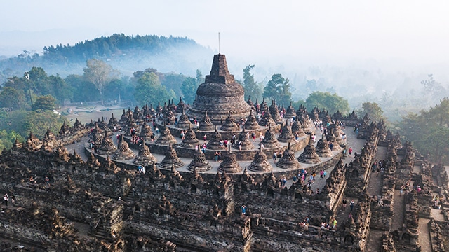

Favorit
Raja Ampat
Asal mula nama Raja Ampat menurut mitos masyarakat setempat berasal dari seorang wanita yang menemukan tujuh telur. Empat butir di antaranya menetas menjadi empat orang pangeran yang berpisah dan masing-masing menjadi raja yang berkuasa di Waigeo, Salawati, Misool Timur dan Misool Barat. Sementara itu, tiga butir telur lainnya menjadi hantu, seorang wanita, dan sebuah batu
Lokal : Rp. 500.000,-
Interlokal : Rp. 1.000.000,-
Pantai Kuta Bali
Pantai Kuta, memiliki bentangan pantai pasir putih bersih dengan ombak yang sangat cocok untuk surfing dengan pemandangan sunset yang indah. Disisi pantai Kuta, terdapat banyak jasa penyewaan papan selancar dan juga menawarkan kursus berselancar. Mengenai harga sewa papan selancar sangat bervariasi, dan usahakanlah untuk menawar terlebih dahulu.
Lokal : Rp. 0,-
Interlokal : Rp. 0,-
Wakatobi
Wakatobi adalah sebuah destinasi wisata berupa ombak dan lautan nan cantik. Di Wakatobi, kita bisa melakukan kegiatan-kegiatan seru, seperti berenang, snorkling, memancing, dan tentunya menikmati keindahan bawah laut dengan diving. Tempat wisata ini terdiri dari 141 pulau eksotis dengan empat pulau utama, yaitu Wangi Wangi, Kaledupa, Tomia, dan Binongko.
Lokal : Rp. 160.000,-
Interlokal : Rp. 160.000,-
Candi Borobudur
Candi Borobudur menjadi salah satu tempat peribadatan berpengaruh bagi umat Buddha di dunia. Setiap tahunnya, kompleks candi ini menjadi pusat perayaan hari raya Waisak dan didatangi oleh umat Buddha dari berbagai negara, seperti Thailand, Kamboja, Cina dan TIbet. Candi Borobudur disebut sebagai kompleks candi Buddha terbesar di Indonesia, bahkan juga terbesar di Dunia.
Lokal : Rp. 50.000,-
Interlokal : Rp. 365.000,-